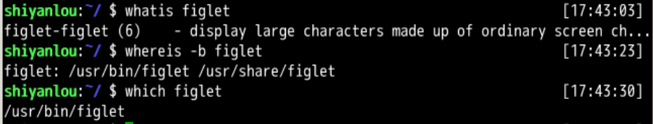
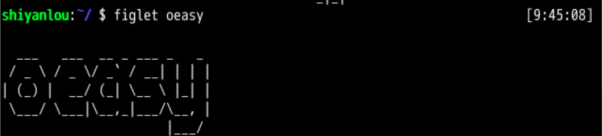
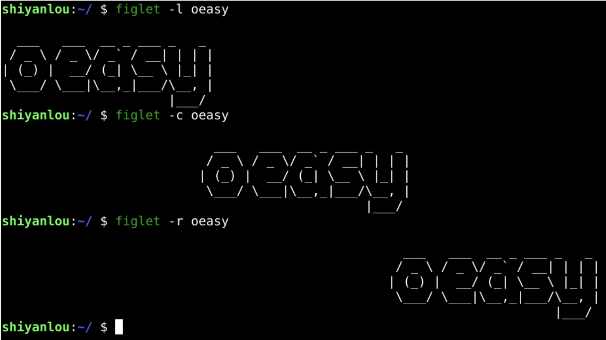
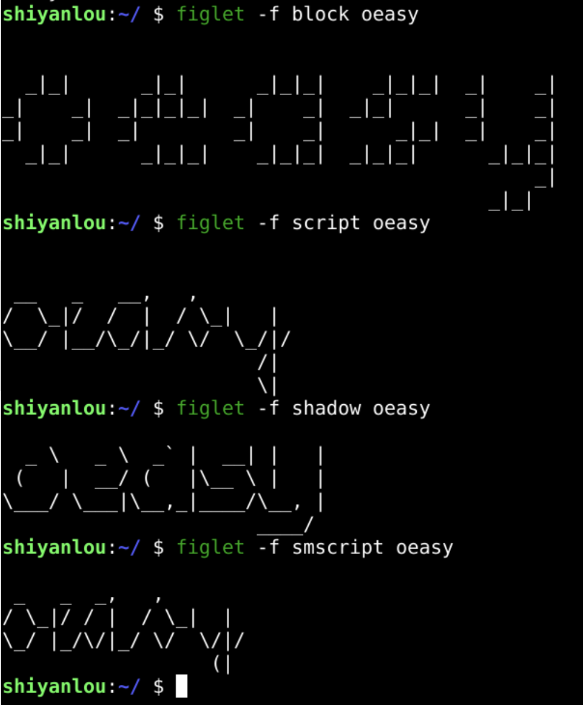
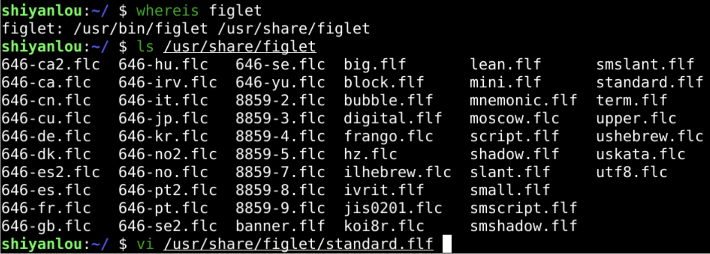
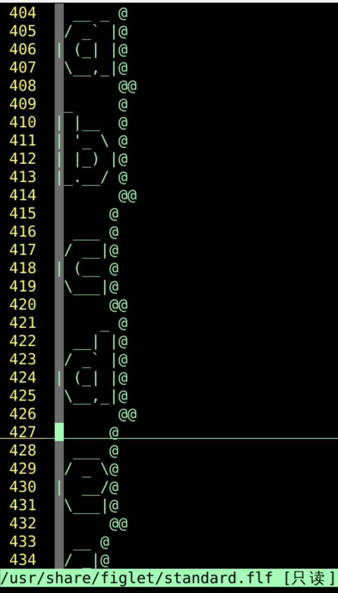
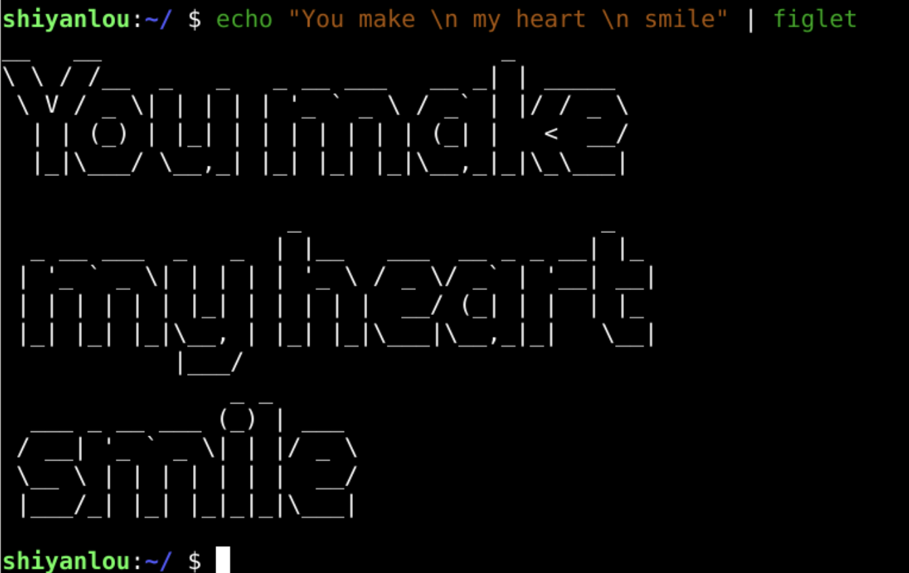
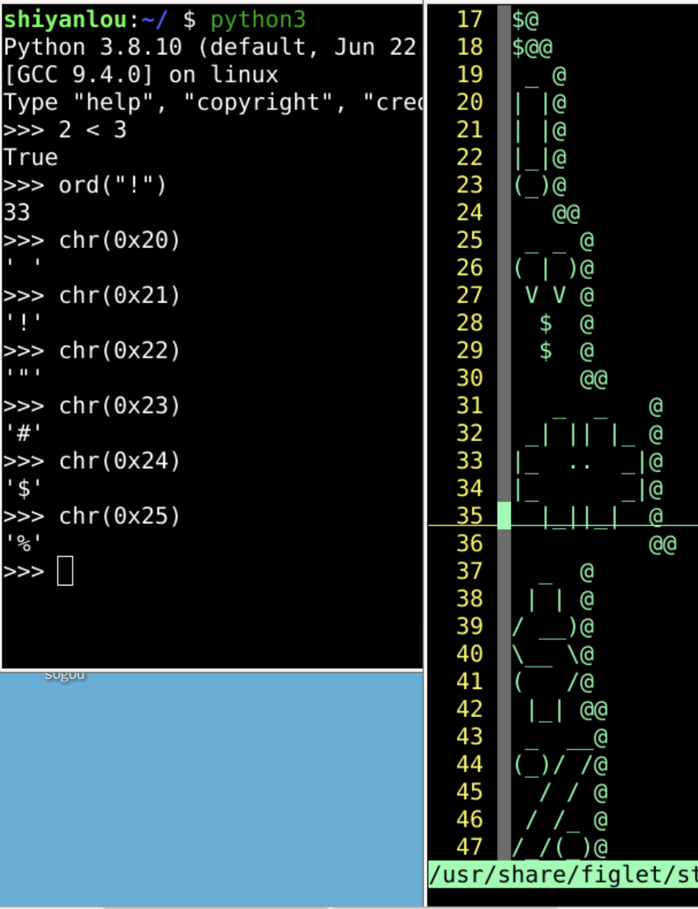
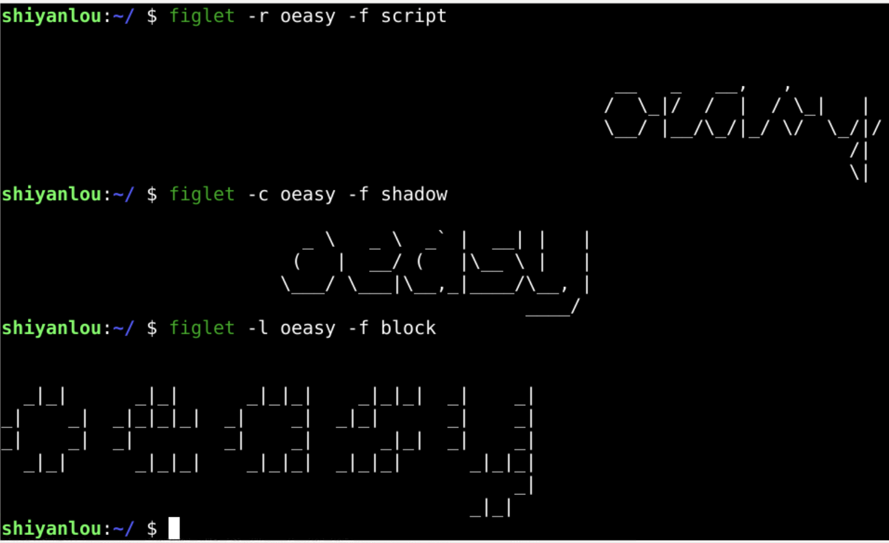

本章回顾
回忆 😌
- 上次研究的是linuxlogo
- 可以下载二进制文件
- 也可以下载源文件
- apt 有一些 参数
search
show
install
source
- 甚至coreutils里面的基本命令的源代码都可以下载
- 还有什么好玩的命令吗？🤔
我们还能玩点什么呢？🧸
- 这个实验我们想制作大字符画 (large character)
- 于是我们在源里面搜索 large character
# 注意这里 large 和 character 有空格
apt search large character
找到两个命令 figlet 和 toilet
# 从源下载 figlet
sudo apt install figlet
figlet 灵魂三问 💡
让我们来发起“灵魂三问”。 😉
whatis figlet
whereis -b figlet
which figlet

具体用一下这个 figlet
- 我们可以看到 oeasy 做为参数
- 被放大了
- 被做成了字符画
- 这有点亚文化呀
- 可以做成签名档

figlet 细节
- 手册告诉我们一些参数
- 对齐方式：
- -l 左
- -c 中
- -r 右
- 改变字体：
- -f fontfile
- 我们先试试左右
左右

字体

- 确实有好多字体
- figlet 字体文件 flf 在哪呢？🤔
查找一下

- 字体 fif 、flc 文件都在 figlet 文件夹里
- 我们可以做各种各样的签名档了！
- 为什么字体文件可以让文字有字体呢？
字体文件

比亚更亚

字体次序

尝试

疑问 🤔
-
我们突然有了一个疑问
- 那么大字符可以带有颜色吗？
- 迅速在手册中搜索
/color 一下
- 没有结果～
-
接下来我们我们去另一个大字符工具那里玩一下...
- toilet 到底什么意思？🤔
- 下次再说！👋